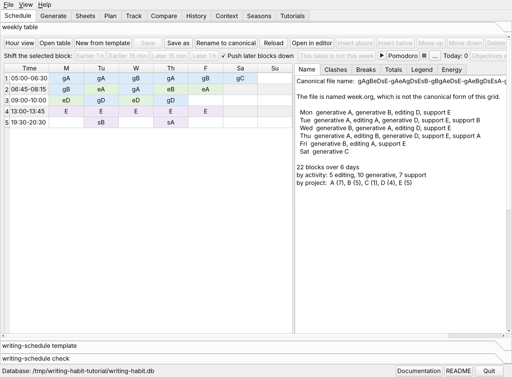
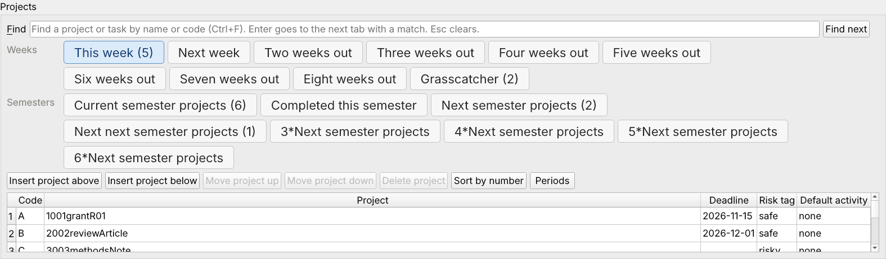
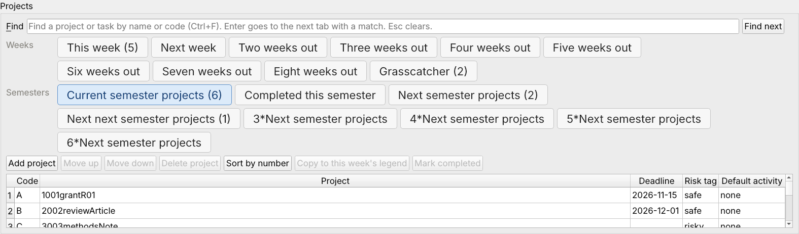

The weekly table is an org file with one row per time block and one column per day. Each cell holds a project code, optionally led by an activity letter. The legend under the grid says what each code means.

The Schedule tab with the practice week open. The legend is below the grid, and the report panels are beside it.
Oct5.org.
The tab reopens the last table at the next start.writing-schedule template 5 --style morning --out ~/org/writing-schedule/tables/Oct12.org emacs ~/org/writing-schedule/tables/Oct12.org
Click a cell and pick a code from the drop-down, or type one. A letter before the code sets the activity of that block.
| Cell | Means |
|---|---|
gA | generative work on project A |
eA | editing work on project A |
sA | support work on project A |
A | project A, with the project's default activity from the legend |
g3 | generative work on project 3, a digit code |
The buttons above the grid insert, move, and delete rows. A new row offers a start time and a length, so the time column stays sorted.
Press Hour view to see the week as 24 hour rows. Double-click a cell to open the range picker. Choose the project and click an end time in the grid. The rows of the grid are the starts at :00, :15, :30, and :45, and the columns are lengths from 15 minutes to two hours. One click places the block, and the range you used last for that project is the default.
The Breaks panel lists any run of blocks longer than two hours with no 15-minute break, and tints those cells amber.
Each legend row has five columns.

| Column | What to enter |
|---|---|
| Code | A capital letter or a single digit 0 to 9. New projects get A to Z first, then 0 to 9, then AA, AB, and so on. Only the 36 one-character codes can appear in a table's file name. |
| Project | The project directory name, such as 1001grantR01. Begin with the four-digit project number, because the sync matches tracker rows by that number. |
| Deadline | A date written YYYY-MM-DD, or empty. Anything else is refused. |
| Risk tag | safe, risky, or none. The dashboard compares the two classes. |
| Default activity | The activity a bare code takes, for example support for email. |
In the file the deadline follows the project name, as in
A: 1001grantR01 2026-11-15 :safe:.
An older legend with free text such as B: 1006AIrxOpt, NSF Dec 15
can be cleaned up with More > Split legend into project and deadline.
The dialog lists every change and any text it would drop. Nothing is written until you save.
The legend should name only the projects of this week. The projects you mean to work on this semester, and those that wait for later, live in six lists on the tabs beside the legend. Each tab shows its number of projects in parentheses.

| Tab | Holds |
|---|---|
| This week | The legend, which lists the projects scheduled this week. Only these can go in the grid. |
| Current semester projects | Every writing project of this semester. The sync counts time on these even in a week they are not scheduled. |
| Completed this semester | Projects finished this semester, kept as a record. The sync still counts late time on them. Mark completed on the current list moves the selected project here. |
| Next semester projects | Projects that start next semester. |
| Next next semester projects | Projects that start the semester after. |
| 3*Next semester projects | Projects that start three semesters ahead. |
| 4*Next semester projects | Projects that start four semesters ahead, about two years out. |
Each list has the legend's columns. A project with no code yet shows an empty Code cell. The buttons add, move, and delete projects. Sort by number orders the projects by the four-digit number that starts each name, with unnumbered projects such as email last. The legend tab has the same button. Copy to this week's legend brings the selected project into the week, keeping its code when the legend does not use it yet.
In the file each list is a small table after the weekly table, named by an org line. A row has the legend's form, and a dash stands for a missing code.
#+NAME: current-semester-projects | B: 1006AIrxOpt 2026-12-15 :safe: | | X: 0374qflip 2026-11-21 :risky: | #+NAME: next-semester-projects | - 1002RNAeditingR01 2027-02-05 :safe: |
The schedule generator reads only the first table, so the lists never reach the plan, the calendar, or the sheets. New from template carries the lists of the open table into the new week.
Press Periods on the This week tab and enter your semesters, or use
Fill a year. The tabs then read Fall 2026 projects,
Spring 2027 projects, and so on. The calendar is an org table in
periods.org beside the tables.
When a new semester starts, a banner offers Roll forward. Completed
projects go to completed.org. The current list goes to
Carried over, where Move to current list keeps a project and
Delete project drops it. Every later list moves one semester nearer.
The panels beside the grid update as you type.
writing-schedule check ~/org/writing-schedule/tables/Oct5.org writing-habit name 4gAAeAsA-gWW --table ~/org/writing-schedule/tables/Oct5.org
Press Save. Each edit rewrites only the line it touched, so the rest of the file stays as you wrote it. Open in editor hands the file to Emacs, and the tab reloads it when you return.
Next, import the plan.